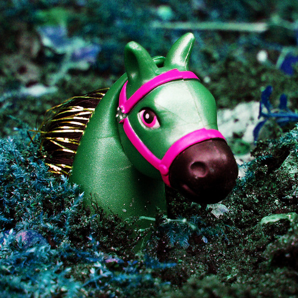
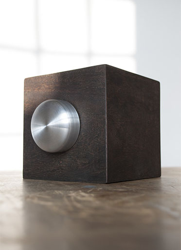
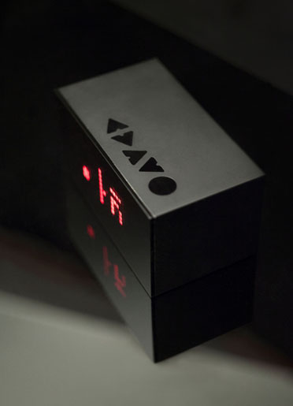
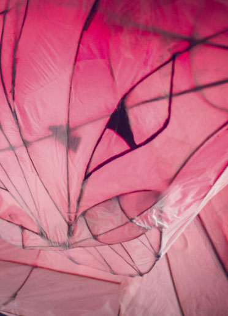

Laura Pedroni
Creative Technologist
Merging Design, Art and Technology. Worked for 4 years as a freelancer in London & Paris, and founded Incidence.io
My projects
|  | Visual BoxVisual Box is a wooden box that generates manipulable visuals on its screen. It takes its inspiration into the research about enchanting experiences with objects developed for my Master thesis. |
|  | Cheshire CatDesign and built of a 2*1m long Cheshire cat for the London party Wonderland, based on the famous story from Lewis Carroll. |
|  | SonySony asked me to make a custom made connected device, which would reflect the quality and aesthetically pleasing appearance of its line of products. |